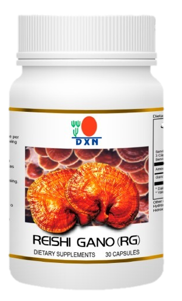
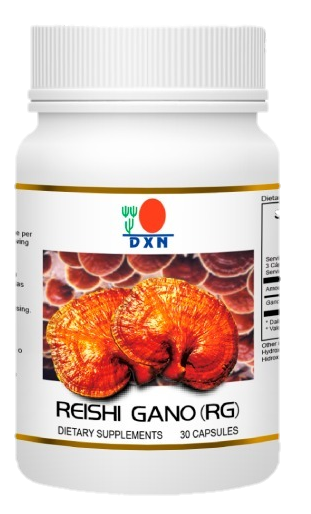

PROTEÍNAS (estimula el crecimiento de los tejidos y músculos, ateniendo el equilibrio general del cuerpo).
MINERALES (mejora la inmunidad y la curación de cualquier órgano)
VITAMINAS GRASAS (La grasa del cacao es una grasa natural con alto contenido de ácido oleico 38.2%; grasa no saturada que ayuda a controlar el nivel de colesterol). Ayuda a la producción e hormonas, enzimas, hemoglobina y anticuerpos, así como a la oxigenación cerebral por lo que es un excelente alimento.
Este producto es bueno por las cualidades del GANODERMA y como bebida nutritiva para niños, adultos, mayores y personas de nutrición deficiente.
¿Cuáles son los Beneficios del Cocozhi?
A continuación le he dejado los beneficios por consumir este cafecito a base de hongo ganoderma.
- Refuerza las defensas.
- Estimula el crecimiento de los tejidos y músculos del cuerpo.
- Controla el nivel del colesterol.
- Ayuda en la producción de: hormonas, enzimas, hemoglobina, anticuerpos y oxigenación cerebral.
- Provee de energía.
- Elimina radicales libres.
- Combate el estreñimiento.
- Combate alergias de todo tipo
- Es anticaries y antioxidante.
- Post Data: El GANODERMA no modifica el delicioso sabor del café.
Zhi Mocha
Zhi Mocha, sepa usted que esta es una bebida natural. En la actualidad los granos de café contienen más de 100 tipos de aromas naturales. Éste es por qué el aroma del café puede estimular la actividad mental y también incrementar la energía en el cuerpo. Para aquellos amantes del café que desean un toque de chocolate el ZHI MOCHA, es su mejor opción.
DXN ZHI MOCHA, definitivamente sería otra bebida de tu elección, para poder añadir emoción a tu vida. Con una taza de Zhi Mocha, usted podrá disfrutar del sabor de éste café superior sin sentir aumento de peso.
Presentación: 20 sobre de 21 gramos.
Ingredientes: : Extracto de Ganoderma Lucidum (Lingzhi), Crema de Leche Descremada, Leche desnatada en polvo, extracto de malta, polvo de café instantáneo, cacao en polvo.
Contenido:20 sobres de 4,5 gramos.
El gusto por el café no tiene fronteras y se expande rápidamente, el café después del petróleo ocupa el segundo lugar de ventas mundiales.
¿Como debo tomar Zhi Mocha - DXN (Café – Cacao)?
Preparación: Vacíe una bolsita de Zhi Mocha en una taza. Agregue 6 – 8 onzas de agua caliente mientras lo revuelve, azúcar al gusto.
¿Cuáles son los Beneficios de Zhi Mocha - DXN (Café – Cacao)?
A continuación le he dejado los beneficios por consumir este cafecito a base de hongo ganoderma.
- Reduce el colesterol.
- Protege los dientes de las caries.
- Reduce el riesgo de enfermedades al corazón.
- Es bueno para el cuerpo.
- Contiene muchos nutrientes.
- Entre otros y más…
Black Coffe 2 en 1

¿Qué es el lingzhi black coffé 2 en 1?:
Es un delicioso café negro, elaborado por la empresa DXN de manera 100% natural, sin ningún químico agregado y totalmente orgánico, esta combinado con el ganoderma lucidum o también llamado lingzhi ( de allí el nombre ) que contiene miles de propiedades para el tratamiento de la salud y diferentes enfermedades, también es alcalino y puede ser tomado por cualquier persona.
Presentación: 20 sobre de 4,5gr.
¿Para Qué Sirve?
Sirve principalmente para mejorar tu cuerpo de manera general:
desde tu sistema inmunológico, desintoxicación de todo tu organismo expulsando toxinas dañinas, fortalecer tu cerebro y defensas.Beneficios de tomar lingzhi black coffe 2 en 1:
- Ayuda a bajar de peso
- Problemas con el colesterol alto
- Ayuda a mejorar tu páncreas
- Ayuda al tratamiento de la diabetes
- No sube la azúcar
- Ayuda a mejorar los problemas con la presión alta
- Recomendado para la gastritis
- Ayuda a mejor síntomas de estreñimiento
- Puede mejorar la circulación de la sangre
- Problemas con la falta de apetito
Suplementos Dietarios
Reishi Gano (RG)
 

Reishi Gano es una especie de esencia de hongo (Ganoderma lucidum) que contiene polisacáridos, adenosina, triterpenoides, proteínas y fibra. El Ganoderma lucidum utilizado es cosechado de un hongo rojo de 90 días de edad. El RG ayuda a equilibrar las funciones afectados del cuerpo. La ingesta diaria de Reishi Gano (RG) ayuda al mantenimiento del bienestar general
Otros Beneficios de consumir RG
- Escanea el cuerpo buscando las enfermedades.
- Limpia las toxinas.
- Regula las funciones del cuerpo.
- Asegura la recuperación de la salud.
- Preserva la juventud.
Presentación:90 capsulas x 270 mg.
Presentación:30 capsulas x 270 mg.
Reishi Gano (GL)

El GL es el micelio del hongo Ganoderma (raíz del hongo) de 18 días y suministra un espectro completo de vitaminas y minerales a nuestro cuerpo.
Beneficios de consumir GANOCELIUM (GL)
- Aumenta la resistencia del cuerpo.
- Saca las toxinas del cuerpo.
- Provee una gama completa de vitaminas y minerales.
- Ayuda a mantener saludables el sistema gástrico y el sistema renal.
Presentación:90 capsulas x 270 mg.
Presentación:30 capsulas x 270 mg.
Espirulina

La espirulina tiene multitud de vitaminas y nutrientes fundamentales para nuestro organismo. Entre ellas las más comunes son las siguientes:
- Anemia: es una fuente de hierro por lo que ayuda a tratar esta deficiencia que debemos también paliar a través de alimentos con un alto contenido en proteína.
- Ayuda a regenerar la flora intestinal: posee un alto contenido en fibra lo que ayuda a mantener un tránsito intestinal regular gracias a sus antioxidantes.
- Ayuda a controlar el peso: posee felilanina, un aminoácido que reduce el apetito y tiene un gran poder saciante que ayuda a personas que lo necesiten a controlar su peso. Te explicamos esto por qué muchas famosas se han sumado a este superalimento como parte de sus dietas extremas para bajar de peso. Sigue leyendo porque tenemos mucho que contarte.
- Fortalece el cabello: tiene multitud de vitaminas que ayuda a un mayor crecimiento del pelo y a que tengan más fuerza gracias a las vitaminas del grupo B12.
- Ayuda a combatir el envejecimiento: gracias a su valor nutritivo concentrado, a que es fácil de digerir y a que contiene antioxidantes como el beta caroteno, que es bueno para la salud de los ojos y la visión. También protege la piel del bronceado.
- Ayuda a prevenir problemas cardiovasculares: reduce el colesterol y los triglicéridos.
Debido a la riqueza nutricional de esta alga, además, se ha relacionado con la pérdida de peso, el aumento de masa muscular o para tratar la fatiga y la astenia
Presentación:120 Tabletas
Cuidado Personal
Ganozhi Shampoo

Shampoo Ganozhi de DXN, con pH neutro puede ser usado para todo tipo de cabello, contiene todos los beneficios del Ganoderma Lucidum y Vitamina B5 que destapa el folículo, sin resecar el cuero cabelludo, manteniendo el PH ideal, es así como revitaliza la belleza natural de tu cabello dejándolo suave, sano, brillante y lo mejor es que empezarás a notar cómo no se te cae más y empieza a salir cabello nuevo.
Beneficios:
- Destapa el folículo, sin resecar el cuero cabelludo manteniendo el PH idea
- Reduce la caspa, comezón y grasa
- Remueve hongos y bacterias del cuero cabelludo.
- Nutre, le da brillo y lo fortalece.
- Evita la formación de puntas abiertas.
- Tu cabello queda brillante
Presentación:1 botella 250 ml
Ganozhi Gel De Baño

Contiene extractos de Ganoderma
Beneficios:
- Limpia la piel delicadamente.
- Provee nutrientes a la piel.
- Elimina la suciedad y grasa que causa la formación de bacterias.
- Vitamina B5
- También reconocido como "Acido Pantotènico"; Hidratante eficaz.
- Ablanda pieles secas.
- Adecuado para pieles secas, sucias y grasosas.
Modo de Empleo:
Aplique antes de la ducha. Dejarlo durante 20 Minutos y enjuagar Adecuado para pieles secas, sucias y grasosas.
Presentación:1 botella 250 ml
Ganozhi Crema de Dientes

Contiene 9 ingredientes: todos orgánicos y 100% naturales.
- GANODERMA: limpia, desintoxica, reconstruye, balancea, fortalece.
- AGUA.
- ACEITE DE MENTA: reduce la acidificación del estómago y acelera su vaciado. Se usa para el tratamiento:
- de infecciones del hígado, de la vesícula
- de cólicos, de úlceras estomacales
- resfríos, gripe, catarro, tos, bronquitis, dolores de cabeza, dolores de muelas.
- FOSFATO DICÁLCICO: es calcio: se usa como suplemento nutricional.
- SACAROSA: es azúcar orgánico, presente en la caña de azúcar y en la miel.
- GLICERINA NATURAL: es un ácido graso que se usa para oxigenar e hidratar la piel.
- ALGINATO DE SODIO: es una glucosa extraída de algas marinas (“marrones”); es un agente gelificante que ayuda a curar las heridas.
- MENTOL: es el alcohol que se encuentra en el aceite de menta. Se usa para curar:
- Herpes labial
- Congestión nasal
- Encías, boca y garganta irritadas.
- LAURIL SULFATO DE SODIO: es un compuesto orgánico, ácido graso derivado de coco y de almendra de palma.
100% NATURAL, SIN SACARINA, NI COLORANTES, NI METALES PESADOS….
La Pasta Dental Ganozhi de DXN no contiene sacarina o colorantes artificiales, sin embargo viene con extracto de Ganoderma de la más alta calidad, gel alimenticio, mentol y un sabor único.
Presentación: 1 tubo 150 gr
Aceite de Masaje Gano
El aceite ganozhi està Enriquecido con puro extracto de ganoderma y aceite de palma, el aceite de masaje de gano contiene el aceite de palma fina y extracto de ganoderma adecuados para cada necesidad de masaje. Es totalmente natural y rico en antioxidantes.
Ideal para todos los tipos de piel y edades. Se usa como una forma revolucionaria para mejorar su masaje.
Presentación: 1 botella 75ml
- Contiene un 30% de extracto de ganoderma y 70% de aceite de palma.
- Es orgánico y natural.
- Rico en antioxidantes, vitamina A, E y beta caroteno.
- La vitamina E favorece la humedad de la piel y el cabello.
- Proporciona alivio del dolor a través de la acción del ganoderma en la mejora de la circulación sanguínea local que efectivamente se refiere a la principal fuente de dolor y espasmo muscular (acumulación de ácido láctico).
- No mentolado y salicilato, evitando así el peligro de la dermatitis inducida por salicilatos y toxicidad de los medicamentos.
- Triglicéridos de aceite de palma llevan ácido linoleico, que favorece la absorción y la disponibilidad para su uso en el cuerpo.
- Adenosina que ayuda a mejorar el tono muscular y la contractilidad.
Tea Tree Cream

La crema del árbol del té es una crema calmante de la piel preparada usando el aceite puro del árbol del té. El aceite es altamente lipofílico (atraído a las grasas, disolvente) y se absorbe rápidamente a través de la piel intacta.
Tea Tree Cream es adecuado para la higiene y la protección de la piel. La aplicación de la crema es segura para toda la familia.
Presentación: 1 Tubo x 30 gr.
Ganozhi Jabón

El jabón Ganozhi está especialmente formulado y enriquecido con extracto de ganoderma y aceite de palma. Limpia suavemente la piel conservando sus aceites naturales sin dañar la estructura de la piel. Además, al contener aceite de palma, que es rico en vitamina E y agentes antioxidantes, ayuda a revitalizar la piel. El jabón Ganozhi deja la piel mucho más suave al tacto.
Presentación: 2 barra x 80 gr.
1 barra x 80gr
BENEFICIOS:
- Limpia la piel delicadamente
- Elimina el exceso de grasa sin dañar la estructura de la piel
- Contiene vitamina E
- Revitaliza la piel
- Trabaja como un Antioxidante
- Equilibra el PH
- Adecuado para todo tipo de pieles
- Suficientemente suave para el cuerpo, la cara y las manos
- Provee de nutrientes necesarios para la piel
- Adecuado para el cuerpo, para Bebes, para afeitar, un jabón para la salud.
ENRIQUECIDO CON:
- Extracto de Ganoderma
- Aceite de Palma y Vitamina E
- Antioxidantes naturales
Trabaja con nosotros:
Dxn te da la posibilidad de trabajar como distribuidor independiente, lo puedes hacer a tiempo parcial o completo.